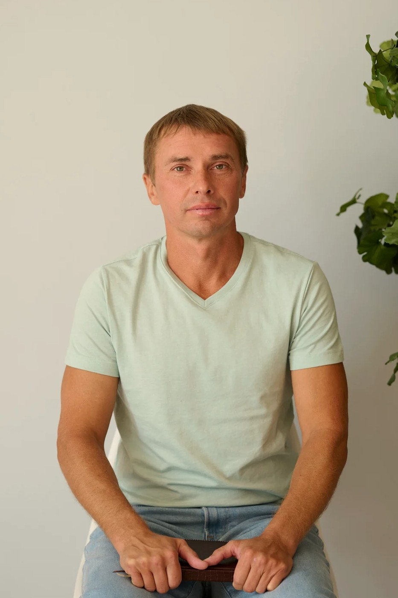

Психолог Александр Исаев. Помогаю взрослым людям снять маски, за которыми они привыкли выживать, и вернуться к себе настоящему.
От масок — к корням. От долженствования — к себе.
Вы здесь, если
Метод
Шесть смысловых узлов — от корней до света. Наведите или коснитесь узла, чтобы увидеть, о чём он.
{{ activeNode.tag }}
{{ activeNode.sub }}
{{ activeNode.desc }}
Шесть масок
«Маска — не твой враг. Она появилась не для того, чтобы разрушить тебя, а для того, чтобы когда-то помочь тебе выжить.»
{{ m.pain }}
{{ m.desc }}
{{ m.age }}
Форматы работы
Цены, даты и форматы — по запросу в мессенджере.
Как проходит работа
{{ st.desc }}
Бесплатно. Познакомимся, вы расскажете, что привело, и вместе поймём, туда ли вы попали. Без обязательств продолжать.
Написать в WhatsAppЧестно
Лучше сказать это сразу, чем через месяц. Если вы узнали себя ниже — я, скорее всего, не тот специалист, и это нормально.
Вопросы
{{ f.a }}
Об авторе
Пятнадцать лет практики. Я пришёл в психологию не за красивыми теориями, а за живым человеком — и остаюсь на его стороне.
Не обещаю быстрых перемен и не даю готовых ответов. Моя работа — помочь вам услышать себя и опереться на собственную силу, а не на меня.
В работе опираюсь на
Ты не
поломан
Как признать свою боль,
принять себя и обрести свободу
Александр Исаев
Книга
Как признать свою боль, принять себя и обрести свободу.
Открыть страницу книги →Отзывы